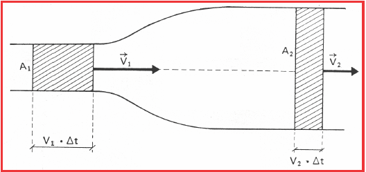

Equação da continuidade
A equação da continuidade é baseada na lei de conservação de massa, que diz que a massa do fluido não
pode ser criada ou destruída. Aplicada à hidráulica agrícola, ela é usada para calcular a vazão de
água em canais e tubulações, considerando que a massa específica é constante no regime permanente.

Princípio de conservação de massas.
Na figura anterior, observamos um tubo em que $A_1$ e $A_2$ representam as áreas das seções retas em duas partes distintas do tubo. As velocidades de escoamento em $A_1$ e $A_2$ valem, respectivamente, $V_1$ e $V_2$. Como o líquido é incompressível, o volume que entra no tubo no tempo t é aquele existente no cilindro de base A1 e altura $X_{1} = V_{1} \times t$. Esse volume é igual àquele que, no mesmo tempo, sai da parte cuja secção tem área A2. Desta forma, Volume (1) = Volume (2). $$\Delta V1 = \Delta V2$$ Se dividirmos o volume escoado (V) pelo tempo de escoamento (t), teremos uma grandeza denominada vazão em volume e pode ser representado pela letra Q. $$Q = \frac{\Delta V}{\Delta t}$$ Podemos afirmar aqui que: $$Q_{1} = Q_{2} \Rightarrow \frac{\Delta V_{1}}{\Delta t} = \frac{\Delta V_{2}}{\Delta t} \Rightarrow \frac{A_{1}.\Delta X_{1}}{\Delta t} = \frac{A_{2}.\Delta X_{2}}{\Delta t} = \text{constante}$$ A partir dos conceitos básicos da cinemática aplicados em Física, sabe-se que a relação $\Delta X/ \Delta t$ é velocidade do escoamento (V). Portanto, pode-se escrever a “Equação da Continuidade” da seguinte forma: $$Q_1 = Q_2 = V_1.A_1 = V_2.A_2$$ Q representa a vazão do fluído (m$^3$s$^{-1}$), V é a velocidade do escoamento (ms$^{-1}$) e A é a área da seção transversal da tubulação (m$^{2}$). Pela equação da continuidade podemos afirmar que “a velocidade de escoamento é inversamente proporcional à área da seção transversal do conduto”.